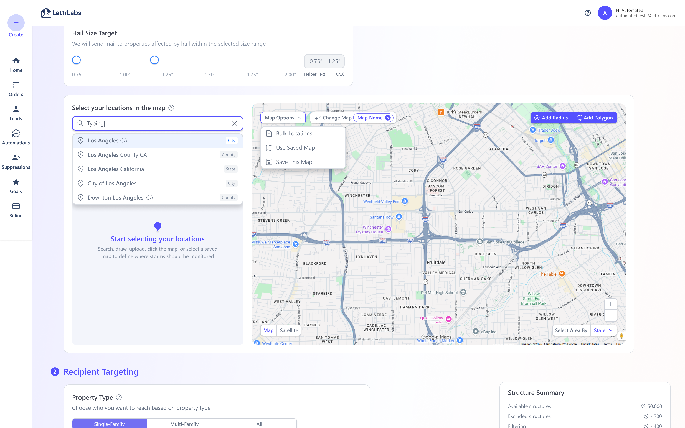
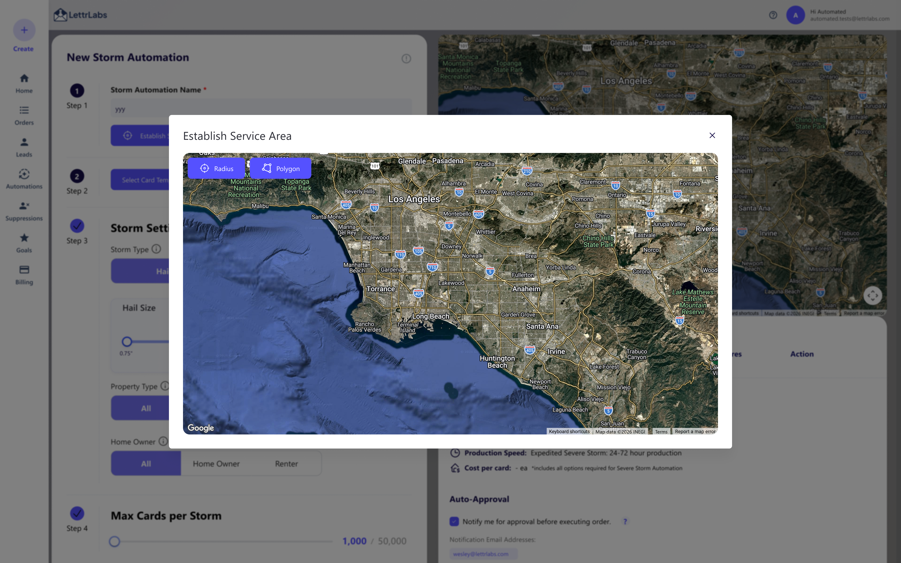
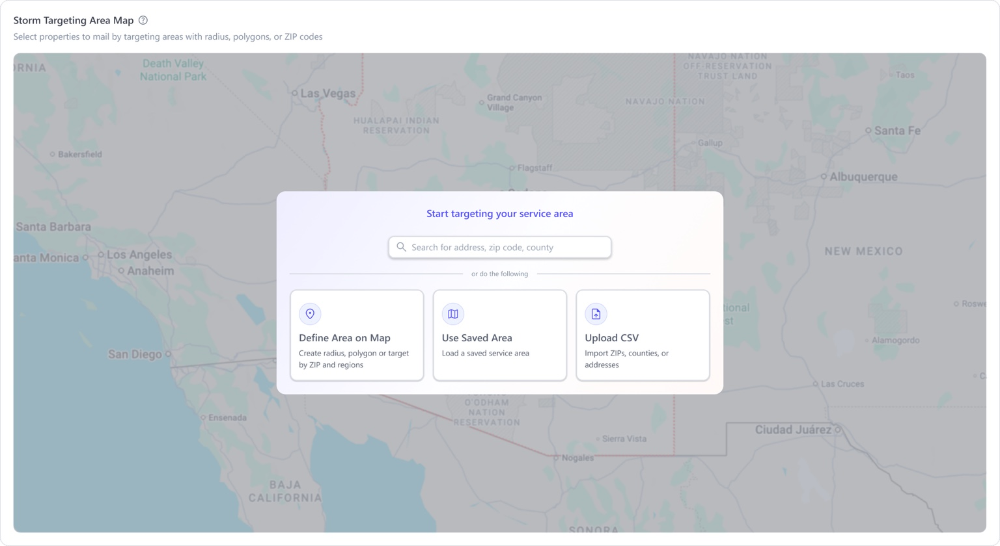
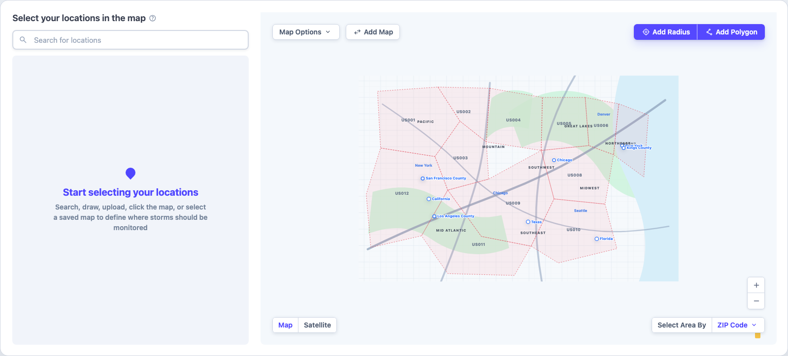

Redesigning LettrLabs' map workflow into an audience builder.
I modernized a two-year-old geographic audience builder inside LettrLabs' automation flow. The ask was to fix map bugs. What I kept running into was bigger than that. Customers often needed Customer Success just to create an automation, so I moved the work from "make the map better" to "help different users build audiences without getting blocked."


North Star
The redesign is live. It cleared the blockers I'd audited on the primary targeting path and addressed the first phase of the tracked map-and-automation tickets. I defined one audience model for five entry points, and CSV upload, saved areas, and exclusions were held for later releases on purpose.
- My role
- Led the audience-builder (map) design end-to-end. Another designer owned the automation around it
- Outcome
- Turned a pile of scattered bug-fixes into one audience model, with a phased path from map-first use to five entry points
- Timeline
- 6 weeks, from audit to shipped redesign
- Process
- AI-assisted prototype, built in Codex
The short version.
Usage and revenue numbers come from internal analytics, rounded.
An old audience builder buried in the automation flow, with one way in. Open the map, draw a shape. If you thought in ZIP codes, already had a CSV, or wanted last month's area again, there was no way in for you. So people called Customer Success or filed a ticket, and the same blockers showed up in both.
I led the audience-builder design end-to-end and changed the brief from "fix the map" to "help different people build an audience without getting stuck." ~20 customer interviews sorted into 4 user mental models. I turned those into one audience model with five entry points.
Phase one shipped the map-first workflow and the core targeting controls. I defined the full five-entry-point model up front for phased delivery, so later releases could add CSV upload, saved areas, and exclusions without reopening the interaction model.
Why do customers need Customer Success just to create an audience?
On paper it was a bug-fix pass on an old map. The map wasn't the problem though. The workflow around it was. There were setup gates, dead clicks, missing controls, and work people kept having to redo. The real job was the way people already think about building an audience. Before I bet the redesign on that hunch, I checked it against every source I could get.
I used the audit to move the conversation from "bugs" to blockers.
The loudest signal wasn't that the UI looked old. It was that the product kept saying "not yet" and never showed customers a way forward.
One workflow for four user mental models.
None of these personas needed a different product. They needed one audience-building workflow that could bend to how they already thought about the task.
Power users
They're at home with audience controls and refinement logic. They start from CSV upload, include / exclude rules, and filtering, so import has to be fast and complex edits have to hold up.
Local marketers
They already know the geography they want, a ZIP, city, county, or state. Geographic selection has to work directly, instead of making drawing tools the default.
Repeat users
They come back to a workflow they've set up before. They start from saved, reusable locations, so reuse has to be quick and carry over from earlier campaigns.
New users
They still need to see the map to get their bearings. They start map-first, so the product needs clear entry actions, guidance they can see, and feedback that teaches the workflow as they go.
Every stage had a clear path forward.
I rebuilt each stage from the audit and the behavioral data. The phase-one improvements sit next to the full phased model that guided later releases.
The first concept wasn't what shipped.
The fork was task-first against map-first. Task-first lets people pick how to start before they touch the map. Map-first was the proven behavior. I shipped map-first to keep the launch low-risk and wrote task-first up as an A/B hypothesis. The version I'd design and the version that's safe to ship aren't always the same one.

Start from the customer's job, not the map control.
My first proposal put clear entry points before any map interaction. Search a place, define an area, reuse a saved area, or upload a CSV. Not everyone showed up ready to draw, so the way in had to match how they already thought about the task.
Start with the customer's job. Make CSV, saved areas, search, and map tools equal entry points, and lean on support less by matching how the different personas already think.
Keep the map visible, because it's central to the product experience. Make it feel more capable before people move into targeting details, so they keep the visual trust and take fewer steps.
Their research showed customers approached audience creation in different ways. One rigid map-first path didn't fit the clustered personas.
Several entry points could still resolve into one audience model, which is easier to reason about than a set of separate one-off workflows.
Most of their support work was helping customers reach an audience they already had in mind, not teaching more map interaction.
I reframed the map as an audience builder.
That shift told me what belonged in the experience and what stayed secondary. I specified search or region selection, CSV upload, saved areas, radius, and polygon as paths into the same model. Every entry point lands in one audience, so people can look at total reach and cost instead of the tool they used to get there.
One model that bends to the job at hand.
These prototype walkthroughs show three paths through the shipped core and the planned refinements.
The hardest parts weren't UI decisions. They were trade-offs.
I put the cost of each decision on the table so PM, business, design, and engineering could agree faster.
The prototype changed how the team talked about the problem.
I built the first interactive prototype in Codex, AI-assisted, so PM, business, and engineering could click a running product instead of imagining static Figma screens. That's where the validation happened, and it gave engineering something real to pressure-test.
Problem → PRD → UX strategy → Design → Engineering. Feedback showed up late, on static screens.
Problem → working prototype → PM + CS feedback → business review → engineering feasibility → design refinement. Review turned into a product conversation.
It also taught me to design with the constraints instead of around them. The prototype changed the map-provider call and moved engineering from Google Maps to MapTiler, with the edge cases and the interaction model settled before anyone wrote production code.

The first interactive build in Codex. Press play to load it live.
Every state drafted from the design system's own specs.
The map has a lot of states. Empty, radius, polygon, county include, ZIP exclude, loading, validation. AI drafted them from the design system's components and the shared Markdown specs, so the drafts stayed in line instead of turning into one-off mocks.
One source of truth
Components, tokens, and rules written once, so every AI-drafted map state used the real components instead of a mock that drifts.
States & logic
Relevancy checks, validations, and conditional branches for empty, radius, polygon, and exclusion, all drafted from the same specs.
First-draft copy
A machine-readable voice-and-tone reference gave me first-draft UX copy that already sounded like the product.
The final direction turned targeting into a workspace, not a one-path map tool.
The interaction model pulls search or region selection, CSV upload, saved areas, radius, and polygon into one audience-building context. Phase one shipped the map-first path. The rest of the entry points are designed and waiting for the later phases.
The interactive prototype loads only when you press play.
The redesign shipped and turned the map into a stronger automation foundation.
The real win wasn't a cleaner interface. It was a workflow that matches how customers actually build audiences.
From one rigid path to a five-entry-point model
The audit and the observed sessions showed 6 steps before anyone drew a single area, with roughly 3 of them repeated for every extra location. I defined search or region selection, CSV upload, saved area, radius, and polygon as one model. Phase one shipped the map-first path and the core targeting controls.
Step counts from the UX audit and 20 observed customer sessions.
De-risked a revenue-critical path
The redesigned audience builder shipped on the surface behind ~95% of automations, the same one serving the 3 enterprise accounts that carry ~75% of revenue.
One interaction model, ready for build
I evaluated 4 map providers and specified the interaction model across ~55 states spanning 13 flows, with entry methods, calculation states, and failure cases written out for QA.
15 of 31 tickets addressed in phase one
I scoped the remaining 16 issues across later releases covering CSV upload, saved maps, and exclusions. Ticket deflection and completion are the next things to measure as those phases ship.
The task-first idea deserved a test, but the compromise was right.
My strongest rejected idea was a task-first entry, where you pick the map, a CSV, or saved locations up front. It would have helped people who arrive with a clear job in mind. Other customers need the map first to get oriented and trust the flow.
What I'd do with more time: A/B the task-first entry against the shipped map-first flow, one persona at a time, and track time to first audience, map CS tickets, completion, filtering abandonment, saved-location reuse, and paid-filter conversion.
Future opportunities
Build an audience once, save it, and reuse it across automations. It didn't fit the first release, but it's the better architecture, because it narrows the on-screen job to one thing.
A real structure or household count as you select an area. Today that takes a separate pass on USDA-backed sources. Once the data is self-hosted, the map can show it while you draw.
The same audience model could carry LettrLabs-owned data, premium filters, and ROI-based recommendations. These are future product directions, not revenue anyone has booked.